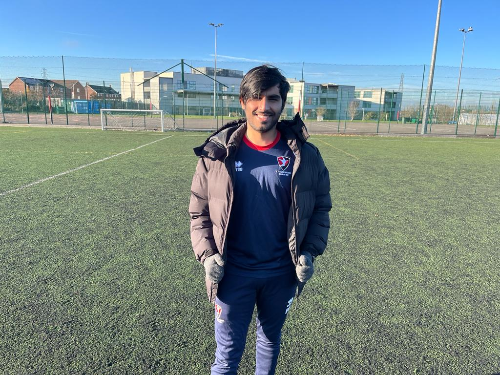
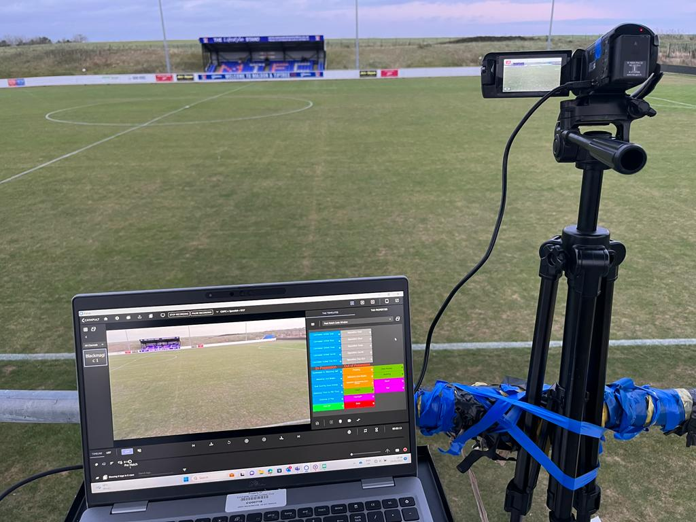

Welcome to my world of sports analysis, where every game is a tale waiting to be told.
I'm Revanth Thakore,
I'm Revanth Thakore,
a passionate


Growing up in a family of sports enthusiasts profoundly influenced my identity and fuelled my passion for the thrilling world of competitive sports. My journey has been one of continuous academic and professional learning, where I have had the privilege of immersing myself in respected organisations and diverse data and video analyst roles, each accompanied by specific responsibilities and aspirations for skills and personal growth. As a player and an analyst, my profound understanding of sports allows me to bridge the gap between analysis and practical application.

I've earned an MSc in Sports Performance Analysis, enhancing my technical skills in data and video analysis. My B.Tech in Electrical and Electronics Engineering has strengthened my logical and mathematical abilities. Strengths include attention to detail, effective communication, and translating complex information into actionable insights. Collaborating with athletes, coaches, and analysts has deepened my appreciation for teamwork and its role in sports success. Working with players from Academy to First-Team levels, spanning youth to professionals, refined my adaptability in analysis delivery. I grasped that analysis reports should aid coaches in training and player development with an evolved approach to creating accessible and captivating presentations for all readers.